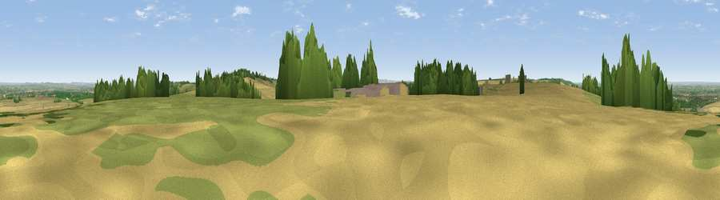

Viewpoint near Letcombe Bassett
#32240 in England · top 47% of its area beats it · near Letcombe Bassett · path 101 mWhere it is
The exact computed spot (SU 40125 84525). Click the marker for map links.
Public access: the nearest public right of way is about 101 m away — the final stretch may cross private land. Computed from Natural England's CRoW access layer and OpenStreetMap rights of way — not the legal definitive map. Always verify locally.
The view, rendered

A 360° render of this exact spot computed from the terrain model, tree cover and land cover — summer colours, afternoon light, calibrated against photographs of famous viewpoints. Real trees, hedges and buildings will differ in detail.
The panorama
Grey silhouette: terrain skyline in each direction (720 bearings, Earth curvature and refraction included). Dashed green: skyline with trees (+15 m) and buildings (+8 m) as obstacles. Blue strip: how far the ground is visible on each bearing.
Where the view opens
Wedge length = distance to the farthest visible ground on that bearing (vegetation-aware). Rings at 10, 25 and 50 km.
What fills the view
58% cropland · 26% grassland · 13% woodland · 2% built-up
Angular shares of the visible panorama (visual magnitude), not map area. Landscape diversity 0.45 (0–1 Shannon).
Key numbers
More beautiful places nearby
The staircase of upgrades: each row has a higher view potential than everything closer. Driving times are estimates from straight-line distance, calibrated against real road routing — check an actual route before setting out.
| Place | Direction | Drive | Score |
|---|---|---|---|
| Viewpoint near Letcombe Bassett | W · 1 km | ~2 min | 59.9 |
| Viewpoint near Letcombe Regis | NW · 1 km | ~3 min | 62.0 |
| Seven Acre Hill | W · 6 km | ~13 min | 66.6 |
| Viewpoint near Kingston Lisle | WNW · 9 km | ~17 min | 68.5 |
| Viewpoint near Woolstone | WNW · 10 km | ~19 min | 70.9 |
| Viewpoint near Woolstone | W · 10 km | ~20 min | 76.7 |
| Martinsell viewpoint | SW · 30 km | ~47 min | 76.9 |
| Viewpoint near Leckhampton | NW · 56 km | ~78 min | 77.8 |
51.55819, -1.42261 · source: screening · position refined by local search. Computed location — check access rights before visiting.